arXiv 2501.03575 · cs.CV · v3 2025 年 7 月 9 日（v1 2025 年 1 月 7 日）· NVIDIA 技术报告 · 中文精读
Cosmos World Foundation Model Platform for Physical AI
作者署名 NVIDIA，arXiv 上列了 77 位作者；附录 A 按组列出贡献者（数据、Tokenizer、扩散和自回归预训练、后训练、护栏等），平台架构负责人 Ming-Yu Liu。
关于这份精读。这篇报告在 arXiv 上登记的许可是 CC BY 4.0，但 PDF 第 1 页页脚印着 “© 2025 NVIDIA. All rights reserved.”，两者矛盾（和 SONIC、GraspGen 的情况相同，见读者注 1）。这一批 Cosmos / GR00T 论文由站点作者决定都放原图，所以下面的图从 arXiv PDF v3 裁切，只做了裁切、缩放和格式转换，没有改内容，版权归原作者。展示生成样例的大图（图 1、12、13、17、22、23、25、27、28）没有放，只写文字说明并链接原图。
按原文顺序覆盖第 1 到 9 节和附录 A，小节编号和原文一致，用自己的话整理，不逐字翻译。每节先给结论。公式按原文编号，表格数字照录原文，长表放在可折叠的框里。“读者注”是我核算或对照时发现的，不属于论文内容，页尾有汇总。
代码。论文对应的仓库是 nvidia-cosmos/cosmos-predict1（报告摘要里直接链到它）。我读的是提交 724daa1（2026-06-07），Apache-2.0 许可；模型权重是另一份 NVIDIA Open Model License。仓库 README 写明它已停止主要开发、转向 Cosmos 3。Tokenizer 另有独立仓库 NVIDIA/Cosmos-Tokenizer（提交 3584ae7，2025-02-10，Apache-2.0），内容已并入 cosmos-predict1 的 cosmos_predict1/tokenizer/，我以后者为准。NVIDIA/Cosmos 现在是 Cosmos 3 的总入口（提交 5401062，OpenMDW-1.1），不含本文的代码。全部只读，没有运行；数据整理管线和自回归模型的预训练代码没有公开，相关数字无法对照。
本页的位置。这是 NVIDIA Cosmos 系列的第一篇，后面的 Cosmos-Transfer1、Cosmos-Reason1、Cosmos-Predict2.5、Cosmos Policy、Cosmos 3、交互式 Cosmos 都在它之后发布。视频生成这条线沿用了本文 §5.1 的 DiT 结构，但 tokenizer 和训练目标后来换过（至少 OpenWAM 用的 Predict2.5 是这样）；和 OpenWAM 的关系见文末一节。
物理 AI（带传感器和执行器的系统）缺的是“观测与动作交错”的大规模数据，而且探索性动作在真实世界里有代价。作者的答案是先训一个通用的世界基础模型（world foundation model，WFM），即一个能根据过去的视频和扰动（动作、文字等）预测未来视频的模型，再用目标场景的小数据集把它后训练成专用世界模型。
这篇报告与其说是一个模型，不如说是一套平台的说明书。五个部件：
读完我认为值得记住的四点：
原文图 1 是一张样例总图：五行分别是扩散预训练、自回归预训练、相机控制、机器人操作、自动驾驶的生成帧。看原图 ↗
结论：先在海量视频上预训练一个通才 WFM，再用目标物理 AI 系统采集的小数据集后训练，这是作者给出的整体范式（图 2）。
物理 AI 的数据难扩展，因为需要观测和动作交错的序列，而动作会扰动世界、可能造成损坏，在系统初期探索时尤其如此。WFM 被看作物理世界的数字孪生，让 AI 能安全地与之交互。
报告主要关心视觉 WFM：观测是视频，扰动形式多样。预训练 WFM 用大而多样的视频获得通用视觉经验；后训练 WFM 用特定环境的数据专门化。各节内容：
模型和 Tokenizer 以 NVIDIA Open Model License 发布。作者说 WFM 问题远没有解决。
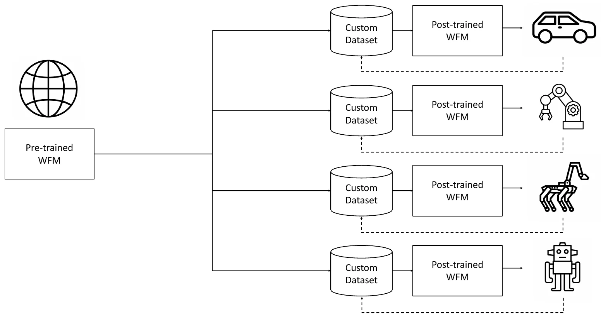
arXiv 摘要页登记的是 CC BY 4.0（v1 到 v3 同一许可）；PDF 第 1 页页脚却写 “© 2025 NVIDIA. All rights reserved.”。这和站内 SONIC、GraspGen 两页的情况一样。按站点规则，本页的原图按用户对这一批的决定处理（见页首），图注里同时写出 CC BY 4.0。代码是 Apache-2.0，权重是 NVIDIA Open Model License，两者也不同。
v1（2025 年 1 月）的模型叫 Cosmos-1.0-Diffusion-7B-Text2World、Cosmos-1.0-Autoregressive-4B、Cosmos-1.0-Tokenizer-CV8x8x8 等；v3 统一改成 Cosmos-Predict1-…、Cosmos-Tokenize1-…（我对照了 arXiv v1 的 HTML 版）。v3 里还留着旧名的痕迹：§6.3.2 写了 “Cosmos-Predict1-7B-Text2World-Sample-AV-MultiView” 和 “Diffusion-7B-Video2World-Sample-MultiView”，这两个名字在表 21 里都没有。读老博客或 HF 旧卡片时，按这个对应关系换名即可。表 4、表 5 等还保留了 “Cosmos-0.1-Tokenizer” 一组旧版 tokenizer 作对比。
结论：WFM 被定义成 \(\hat x_{t+1}=\mathcal W(x_{0:t},c_t)\)：给过去的 RGB 视频 \(x_{0:t}\) 和当前扰动 \(c_t\)，预测下一时刻的观测。扰动可以是物理 AI 的动作、随机扰动或文字描述（图 3）。
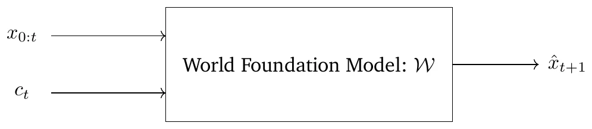
作者列了五种用途：策略评估（让策略和 WFM 交互，代替上真机，先淘汰不行的策略）、策略初始化（WFM 学到的动态作为策略的起点）、策略训练（WFM 加奖励模型当强化学习的环境）、规划或 MPC（模拟不同动作序列的后果，选最好的；世界模型的精度决定这类方法的上限）、合成数据（也可以条件于深度、语义图做 Sim2Real）。作者明确说这篇报告没有给出这些用途的实验结果。
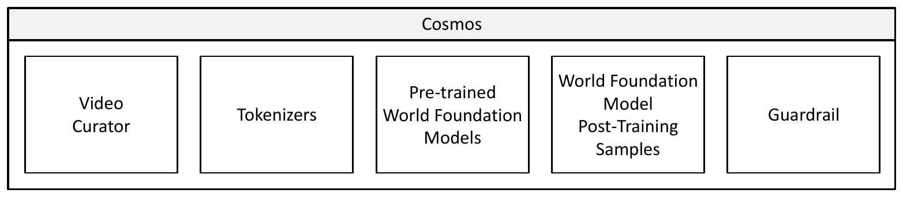
结论：五步管线（切分、过滤、标注、去重、分片），把约 2,000 万小时的 720p 到 4K 视频变成约 10⁸ 段预训练片段和约 10⁷ 段微调片段；图像数据也走同一套管线。工程上的重点是用 GPU 硬件编解码和 Ray 流水线提高吞吐。
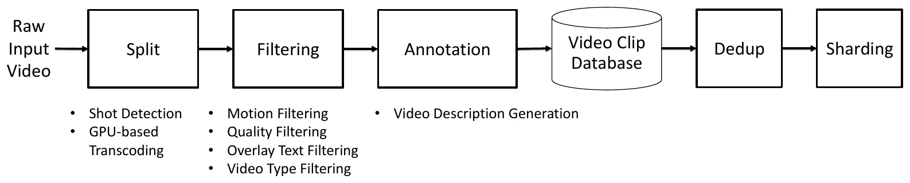
专有视频和公开的互联网视频混用，按物理 AI 的需求定了 9 个类别：驾驶 11%、手部动作和物体操作 16%、人体动作 10%、空间感知和导航 16%、第一人称 8%、自然动态 20%、动态镜头运动 8%、合成渲染 4%、其他 7%（合计 100%）。视频编码、宽高比、分辨率、长度各异，很多还有后期特效，会带来伪影。原始视频约 2,000 万小时，分辨率 720p 到 4K。也收集图像，因为图像视频联合训练能提升画质、加快训练。
3.2.1 镜头检测。把视频切成无镜头切换的片段，输出每个镜头的起止帧。短于 2 秒的丢掉（可能是转场或特效），长于 60 秒的再切到最多 60 秒。作者比较了四种方法：PySceneDetect（HSV 颜色直方图变化阈值，MovieGen 也用它）、Panda70M（PySceneDetect 加 CLIP 嵌入拼接）、TransNetV2 和 AutoShot（神经网络，看 100 帧滑窗，输出每帧是转场的概率）。为此建了基准 ShotBench，包含 RAI、BBC Planet Earth、ClipShots 和 SHOT（AutoShot 的数据集）。ClipShots 的转场帧定义为标注起止的中点。
结果（表 1）：端到端的神经网络方法明显好于手工特征。TransNetV2 和 AutoShot 在已有数据上相近，作者发现 TransNetV2 对更难的转场更好，而且纯神经网络便于在 GPU 上加速，于是选它。两个网络的置信度阈值都设 0.4。
| 数据集 | 指标 | PySceneDetect | Panda70M | TransNetV2 | AutoShot |
|---|---|---|---|---|---|
| BBC | Precision ↑ | 0.894 | 0.959 | 0.983 | 0.984 |
| Recall ↑ | 0.884 | 0.653 | 0.951 | 0.922 | |
| F1 ↑ | 0.889 | 0.777 | 0.967 | 0.952 | |
| RAI | Precision ↑ | 0.856 | 0.933 | 0.918 | 0.889 |
| Recall ↑ | 0.807 | 0.746 | 0.921 | 0.923 | |
| F1 ↑ | 0.831 | 0.829 | 0.919 | 0.906 | |
| SHOT | Precision ↑ | 0.769 | 0.949 | 0.883 | 0.866 |
| Recall ↑ | 0.673 | 0.462 | 0.767 | 0.804 | |
| F1 ↑ | 0.718 | 0.622 | 0.821 | 0.834 | |
| ClipShots | Precision ↑ | 0.395 | 0.649 | 0.685 | 0.653 |
| Recall ↑ | 0.602 | 0.424 | 0.772 | 0.781 | |
| F1 ↑ | 0.477 | 0.513 | 0.726 | 0.711 |
3.2.2 转码。把每段统一重新编码为高码率 mp4（h264_nvenc），用快速运动和高频纹理的视频压测，保证看不出损失；统一编码也让训练数据加载更稳更快。表 2 比较软硬件配置：L40S 有 NVDEC 和 NVENC，H100 只有 NVDEC，所以给 H100 配 28 个 CPU 核来公平比较。把 ffmpeg 换成 PyNvideoCodec 做视频流转码（ffmpeg 只留着混音），加速最大。全部改进合起来吞吐约提升 6.5 倍。
| 方法 | GPU | CPU | 编码器 | 批 | NVDEC 数 | NVENC 数 | 吞吐（视频/秒） |
|---|---|---|---|---|---|---|---|
| ffmpeg | H100 | 28 | libx264 | 1 | 7 | 0 | 0.0574 |
| ffmpeg | L40S | 1 | h264_nvenc | 1 | 3 | 3 | 0.0674 |
| ffmpeg | L40S | 1 | h264_nvenc | 16 | 3 | 3 | 0.1026 |
| pynvc+ffmpeg | L40S | 1 | h264_nvenc | 1 | 3 | 3 | 0.3702 |
“约 6.5 倍”是 0.3702 / 0.0574 = 6.45；“L40S 高约 17%”是 0.0674 / 0.0574 = 1.174。正文说 PyNvideoCodec 一项提升最大（0.3702 对 0.1026，3.6 倍），但这两行批大小不同（1 对 16），所以 3.6 倍里混着“批 16 → 批 1”的变化；表里没有“pynvc + 批 16”这一行，单独换库的效果没法从表里读出。
目的有三：去掉画质不达标的片段，挑出适合微调的高质量片段，调整数据分布。四种过滤：
用 VLM 写描述，而不是用网页的 alt 文字，这样文字风格统一，模型不用适应多种格式。比较了 VFC、Qwen2-VL 和 VILA，小规模人工评估后选 VILA：内部 13B 版本，为视频描述微调，输入最长 5,904 个 token，输出最长 256 个。提示是“详细描述视频的视觉和叙事要素”，输入 8 帧均匀采样。平均描述 559 个字符、97 个词。用 FP8 的 TensorRT-LLM 引擎，比 PyTorch FP16 快约 10 倍（表 3）。
| 引擎 | 精度 | 批 | 片段/秒 | token/秒 |
|---|---|---|---|---|
| PyTorch | FP16 | 1 | 0.21 | 49.6 |
| TRT-LLM | FP16 | 1 | 0.40 | 95.6 |
| TRT-LLM | FP16 | 16 | 1.09 | 260.9 |
| TRT-LLM | FP8 | 16 | 1.96 | 470.6 |
每行 token/秒 ÷ 片段/秒 = 236、239、239、240，约 240 个输出 token 一段，和 256 的输出上限、以及表内各行都一致。加速比：1.96 / 0.21 = 9.3 倍，470.6 / 49.6 = 9.5 倍，正文写“10 倍”是取整。平均 97 个英文词对应约 240 个 token，比常见的约 1.3 token/词偏多，这里的“token”是否含提示或特殊 token，原文没说，未核实。
按 SemDeDup 和 DataComp 的做法做语义去重：复用 InternVideo2 嵌入，用多机 GPU 版 k-means（RAPIDS）聚成 k = 10,000 类，类内算两两距离找重复；遇到重复保留分辨率最高的那段。为了不在显存里存整个距离矩阵，按 256 一块现算上三角并做 argmax 归约。去重去掉约 30% 的训练数据。同一套嵌入和聚类还做成了一个可以用文字或视频检索整个训练集的搜索引擎，用来排查数据问题、看预训练和下游的差距。
把片段打包成 webdataset，按分辨率、宽高比和长度分片，配合训练课程。微调集用更严的过滤阈值生成。
用 AnyScale Ray 搭流式流水线，跨地理分布的集群运行，数据传输和计算解耦，内存随流水线复杂度而不是数据量增长，因此能无限流式处理。不同阶段并行使用网络带宽、NVDEC 和 GPU 计算；作者扩展了 Fragmentation Gradient Descent 算法做多资源分配，调度器自动伸缩各阶段，使吞吐平衡。
9 个类别比例 11 + 16 + 10 + 16 + 8 + 20 + 8 + 4 + 7 = 100，没问题。§1 说“约 1 亿段片段”，§3.1 说“约 10⁸ 段预训练、10⁷ 段微调”，两处一致。各步过滤各去掉多少、1 亿段是去重前还是去重后，原文没给；整理管线的代码不在 cosmos-predict1 仓库里，我没有找别的仓库对照。
结论：Cosmos Tokenizer 是一族时间因果的编解码器，先用两级 Haar 小波把视频在 x、y、t 上各降 4 倍，再用因果的分解卷积和因果注意力继续压缩。连续版是普通 AE（16 通道），离散版用 FSQ（6 维，词表 64,000）。只监督解码输出，不加 KL 或 commitment 之类的隐空间损失。主表里，同样 4×8×8 压缩时它在 DAVIS 和 TokenBench 上普遍优于对比方法，速度快 2 到 12 倍。
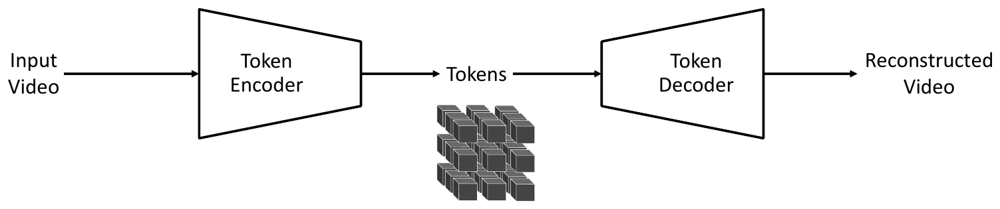
tokenizer 分两类：连续的把视觉数据编成连续向量，给 Stable Diffusion、VideoLDM 这类隐空间扩散用；离散的编成量化索引，给 VideoPoet 这类用交叉熵训练的自回归 Transformer 用（图 7）。难点在压缩率和重建质量的权衡。
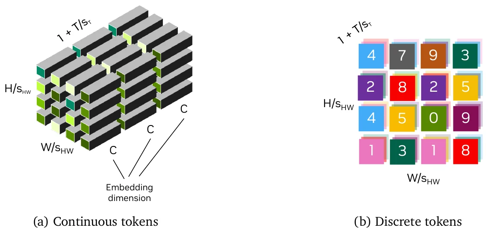
表 4 是功能对比：Cosmos-Tokenize1 是唯一同时满足因果、图像、视频、图像视频联合、离散、连续六项的。
| 模型 | 因果 | 图像 | 视频 | 联合 | 离散 | 连续 |
|---|---|---|---|---|---|---|
| FLUX-Tokenizer | – | ✓ | ✗ | ✗ | ✗ | ✓ |
| Open-MAGVIT2-Tokenizer | – | ✓ | ✗ | ✗ | ✓ | ✗ |
| LlamaGen-Tokenizer | – | ✓ | ✗ | ✗ | ✓ | ✗ |
| VideoGPT-Tokenizer | ✗ | ✗ | ✓ | ✗ | ✓ | ✗ |
| Omni-Tokenizer | ✗ | ✓ | ✓ | ✓ | ✓ | ✓ |
| CogVideoX-Tokenizer | ✓ | ✓ | ✓ | ✓ | ✗ | ✓ |
| Cosmos-Tokenize1 | ✓ | ✓ | ✓ | ✓ | ✓ | ✓ |
设计要点：轻量、时间因果（因果时间卷积和因果时间注意力），直接在高分辨率图像和长视频上训练，不限类别和宽高比（1:1、3:4、4:3、9:16、16:9），推理时长度不受训练长度限制。评测集是 MS-COCO 2017、ImageNet-1K、DAVIS，以及作者新建的 TokenBench（鱼眼、机器人、驾驶、人体活动、导航）。单张 A100 80GB 能一次编码 1080p 8 秒或 720p 10 秒视频。
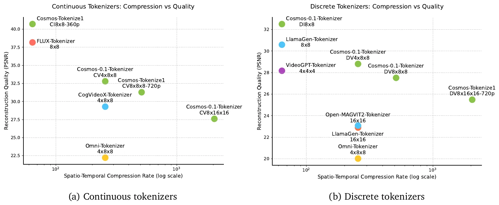
输入 \(x_{0:T}\in\mathbb R^{(1+T)\times H\times W\times3}\)，编码器 \(\mathcal E\) 输出 \(z_{0:T'}\in\mathbb R^{(1+T')\times H'\times W'\times C}\)，空间压缩 \(s_{HW}=H/H'=W/W'\)，时间压缩 \(s_T=T/T'\)。解码器 \(\mathcal D\) 重建：
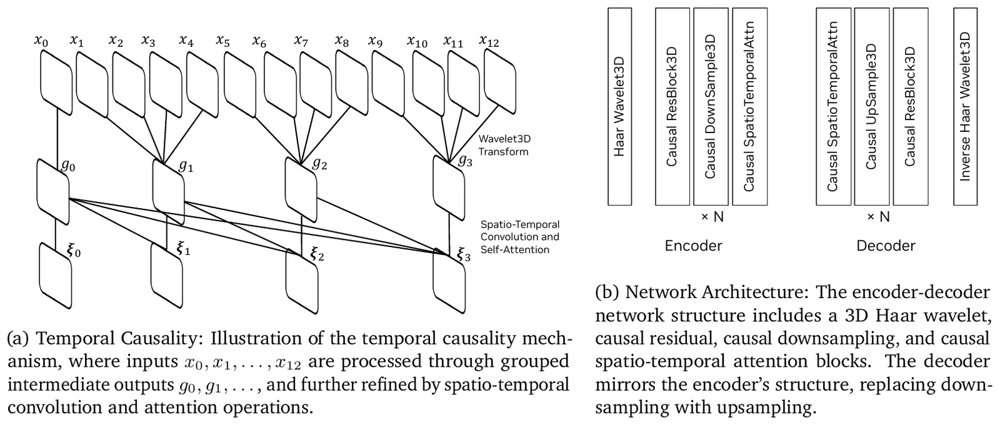
图像和视频按预设频率交替成批，联合训练。只监督解码器输出。两阶段损失。第一阶段是 L1 重建：
加 VGG-19 特征的感知损失（\(\alpha_l\) 是第 \(l\) 层的权重）：
第二阶段加光流损失（RAFT 光流，前后两个方向）让重建在时间上平滑，原文这个式子没有编号：
以及 Gram 矩阵损失增强锐度：
微调阶段再加对抗损失，尤其帮大压缩率保细节。图像 tokenizer（CI、DI）有 8×8 和 16×16 两档；视频（CV、DV）有 4×8×8、8×8×8、8×16×16 三档（T×H×W）。视频分两代：Cosmos-0.1-Tokenizer 用 720p 的较短片段训练（CV 49 帧、DV 17 帧）；Cosmos-Tokenize1 用 360p 或 720p 的较长片段（CV 121 帧、DV 49 帧）。
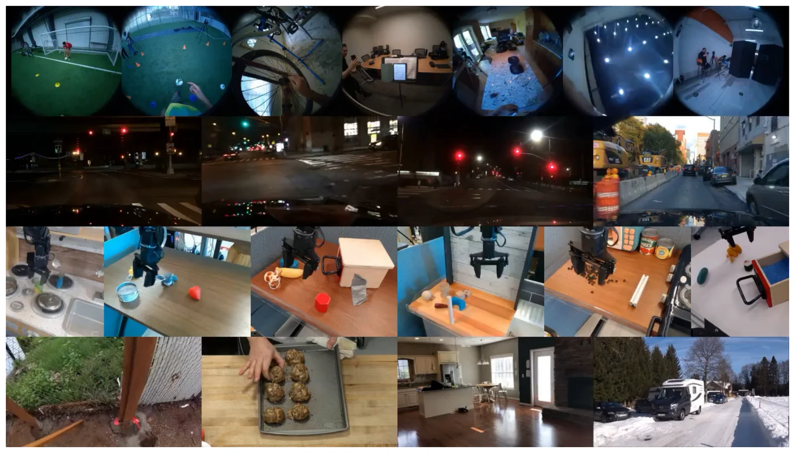
图像在 MS-COCO 2017 验证集 5,000 张和 ImageNet-1K 验证集 50,000 张上评测。视频新建 TokenBench：从 BDD100K、Ego-Exo4D、BridgeData V2、Panda-70M 各随机取 100 段，取前 10 秒，短边缩到 1080；Panda-70M 手工去掉低质量和小运动的；Ego-Exo4D 取 100 个场景、每个一段第一人称加一段第三人称，所以共 500 段。DAVIS 也在 1080p 上评测。指标：PSNR、SSIM，图像用 rFID，视频用 rFVD。
| Tokenizer | 帧 | 形式 | DAVIS | TokenBench | ||||
|---|---|---|---|---|---|---|---|---|
| PSNR ↑ | SSIM ↑ | rFVD ↓ | PSNR ↑ | SSIM ↑ | rFVD ↓ | |||
| CogVideoX-Tokenizer 4×8×8 | 17 | VAE | 29.29 | 0.864 | 19.58 | 32.06 | 0.909 | 6.97 |
| Omni-Tokenizer 4×8×8 | 17 | VAE | 22.23 | 0.713 | 117.66 | 24.48 | 0.830 | 35.86 |
| Cosmos-0.1-Tokenizer-CV4×8×8 | 49 | AE | 32.80 | 0.900 | 15.93 | 35.45 | 0.928 | 6.85 |
| Cosmos-0.1-Tokenizer-CV8×8×8 | 49 | AE | 30.61 | 0.856 | 30.16 | 34.44 | 0.917 | 11.62 |
| Cosmos-0.1-Tokenizer-CV8×16×16 | 49 | AE | 27.60 | 0.779 | 93.82 | 31.61 | 0.875 | 43.08 |
| Cosmos-Tokenize1-CV4×8×8-360p | 49 | AE | 35.85 | 0.920 | 10.057 | 38.42 | 0.950 | 3.34 |
| Cosmos-Tokenize1-CV8×8×8-720p | 121 | AE | 31.28 | 0.868 | 23.49 | 35.13 | 0.926 | 9.82 |
| Tokenizer | 帧 | 量化 | DAVIS | TokenBench | ||||
|---|---|---|---|---|---|---|---|---|
| PSNR ↑ | SSIM ↑ | rFVD ↓ | PSNR ↑ | SSIM ↑ | rFVD ↓ | |||
| VideoGPT-Tokenizer 4×4×4 | – | VQ | 28.17 | 0.850 | 72.33 | 33.66 | 0.914 | 13.85 |
| Omni-Tokenizer 4×8×8 | 17 | VQ | 20.02 | 0.703 | 188.60 | 25.31 | 0.827 | 53.55 |
| Cosmos-0.1-Tokenizer-DV4×8×8 | 17 | FSQ | 28.81 | 0.818 | 37.36 | 31.97 | 0.888 | 19.67 |
| Cosmos-0.1-Tokenizer-DV8×8×8 | 17 | FSQ | 27.51 | 0.789 | 100.15 | 30.95 | 0.873 | 43.86 |
| Cosmos-0.1-Tokenizer-DV8×16×16 | 17 | FSQ | 25.09 | 0.714 | 241.52 | 28.91 | 0.829 | 113.48 |
| Cosmos-Tokenize1-DV4×8×8-360p | 49 | FSQ | 32.97 | 0.840 | 53.44 | 35.74 | 0.910 | 19.25 |
| Cosmos-Tokenize1-DV8×16×16-720p | 49 | FSQ | 25.49 | 0.719 | 259.33 | 29.33 | 0.838 | 107.43 |
| Tokenizer | 高度 | 形式 | MS-COCO 2017 | ImageNet-1K | ||||
|---|---|---|---|---|---|---|---|---|
| PSNR ↑ | SSIM ↑ | rFID ↓ | PSNR ↑ | SSIM ↑ | rFID ↓ | |||
| FLUX-Tokenizer 8×8 | – | VAE | 24.00 | 0.682 | 2.501 | 20.09 | 0.518 | 1.229 |
| Cosmos-0.1-Tokenizer-CI8×8 | 1024 | AE | 28.66 | 0.836 | 1.760 | 28.83 | 0.837 | 0.689 |
| Cosmos-0.1-Tokenizer-CI16×16 | 1024 | AE | 23.63 | 0.663 | 3.823 | 23.72 | 0.655 | 1.031 |
| Cosmos-Tokenize1-CI8×8-360p | 1024 | AE | 32.79 | 0.824 | 1.874 | 32.91 | 0.824 | 0.785 |
| Cosmos-Tokenize1-CI16×16-360p | 1024 | AE | 31.28 | 0.682 | 4.294 | 31.29 | 0.675 | 0.701 |
| Tokenizer | 高度 | 量化 | MS-COCO 2017 | ImageNet-1K | ||||
|---|---|---|---|---|---|---|---|---|
| PSNR ↑ | SSIM ↑ | rFID ↓ | PSNR ↑ | SSIM ↑ | rFID ↓ | |||
| Open-MAGVIT2-Tokenizer 16×16 | – | LFQ | 19.50 | 0.502 | 6.649 | 17.00 | 0.398 | 2.701 |
| LlamaGen-Tokenizer 8×8 | – | VQ | 21.99 | 0.616 | 4.123 | 19.64 | 0.498 | 1.403 |
| LlamaGen-Tokenizer 16×16 | – | VQ | 19.11 | 0.491 | 6.077 | 18.38 | 0.448 | 1.657 |
| Cosmos-0.1-Tokenizer-DI8×8 | 1024 | FSQ | 24.40 | 0.704 | 3.710 | 24.48 | 0.701 | 1.265 |
| Cosmos-0.1-Tokenizer-DI16×16 | 1024 | FSQ | 20.45 | 0.529 | 7.234 | 20.49 | 0.518 | 2.518 |
| Cosmos-Tokenize1-DI8×8-360p | 1024 | AE（原文如此） | 31.36 | 0.714 | 4.133 | 31.34 | 0.707 | 1.324 |
| Cosmos-Tokenize1-DI16×16-360p | 1024 | AE（原文如此） | 30.54 | 0.565 | 7.557 | 30.46 | 0.549 | 2.147 |
| Tokenizer | 类型 | 分辨率 | 帧 | 参数 | 时间（ms） |
|---|---|---|---|---|---|
| FLUX-Tokenizer 8×8 | 连续图像 | 1024 × 1024 | – | 84M | 242 |
| Cosmos-0.1-Tokenizer-CI8×8 | 连续图像 | 1024 × 1024 | – | 77M | 62.7 |
| LlamaGen-Tokenizer 8×8 | 离散图像 | 1024 × 1024 | – | 70M | 475 |
| Cosmos-0.1-Tokenizer-DI8×8 | 离散图像 | 1024 × 1024 | – | 79M | 64.2 |
| CogVideoX-Tokenizer 4×8×8 | 连续视频 | 720 × 1280 | 17 | 216M | 414 |
| Omni-Tokenizer 4×8×8 | 连续视频 | 720 × 1280 | 17 | 54M | 82.9 |
| Cosmos-0.1-Tokenizer-CV4×8×8 | 连续视频 | 720 × 1280 | 49 | 105M | 34.8 |
| Omni-Tokenizer 4×8×8 | 离散视频 | 720 × 1280 | 17 | 54M | 53.2 |
| Cosmos-0.1-Tokenizer-DV4×8×8 | 离散视频 | 720 × 1280 | 17 | 105M | 51.5 |
论文和图 8 的压缩率是 \(s_T\times s_H\times s_W\)：4×8×8 = 256，8×8×8 = 512，8×16×16 = 2048。它不看通道。按元素数算：CV8×8×8 把 8 × 8 × 8 × 3 = 1,536 个像素值变成 16 个隐变量，是 96 倍；DV8×16×16 把 8 × 16 × 16 × 3 = 6,144 个 8 位像素值变成 1 个整数，词表 \(8^3\times5^3=64{,}000\)，\(\log_2 64000=15.97\) 位，按比特是 6,144 × 8 / 15.97 ≈ 3,079 倍。所以 DV8×16×16 比 CV8×8×8 的信息压缩大约多一个量级，这也解释了 §5.2.5 为什么要扩散解码器。
表 8 最后两行 Cosmos-Tokenize1-DI8×8-360p 和 DI16×16-360p 的量化一栏写的是 “AE”。这两行是离散 tokenizer，代码里 discrete_image_8x8_360p 和 discrete_image_16x16_360p 都是 quantizer=FSQ（cosmos_predict1/tokenizer/networks/configs.py），所以应是 FSQ，我认为是复制表 7 时留下的笔误。
§4.2 说 Cosmos-Tokenize1 的 CV 用 121 帧训练。表 5 里 CV8×8×8-720p 是 121 帧，但 CV4×8×8-360p 写 49 帧。可能是 360p 版另有设定，原文没解释。另外它的 DAVIS rFVD 写成 10.057（三位小数），其他行都是两位，大概是 10.06。
按表 9 算加速比：FLUX / CI8×8 = 242 / 62.7 = 3.9；LlamaGen / DI8×8 = 475 / 64.2 = 7.4；CogVideoX / CV4×8×8 = 414 / 34.8 = 11.9；Omni(连续) / CV4×8×8 = 82.9 / 34.8 = 2.4；Omni(离散) / DV4×8×8 = 53.2 / 51.5 = 1.03。所以离散视频这一对几乎一样快，不到 2 倍。“模型最小”也不完全成立：Omni-Tokenizer 是 54M，Cosmos 视频版是 105M。另外比较的帧数不同（Cosmos CV 49 帧，其余 17 帧），每帧时间会受长度影响。
正文说在 4×8×8 下 Cosmos 在 DAVIS 和 TokenBench 的所有指标上都是最好。表 5（连续）确实如此。表 6（离散）不是：VideoGPT 4×4×4 在 DAVIS 的 SSIM（0.850）和 TokenBench 的 SSIM（0.914）、rFVD（13.85）上都好于 Cosmos-Tokenize1-DV4×8×8-360p（0.840、0.910、19.25）。VideoGPT 的压缩率低 4 倍（64 对 256），所以不算不公平，但“全部指标”这句话不准。摘要里的“+4 dB”：连续版 Tokenize1-CV4×8×8 比 CogVideoX 高 35.85 − 29.29 = 6.56 dB，0.1 版高 3.51 dB；离散版 Tokenize1-DV4×8×8 比 VideoGPT 高 32.97 − 28.17 = 4.80 dB。
对得上的：FSQ 级数 [8, 8, 8, 5, 5, 5]、embedding_dim 6；连续版 latent_channels 16、formulation AE；patch_method "haar"、patch_size 4（两级小波，4 倍）；视频编码器类型 FACTORIZED（分解卷积）；num_groups = 1 的 GroupNorm 即对通道的 LayerNorm 形式。有差别的：① 360p 的几个版本（CI8×8-360p、CV4×8×8-360p、DI8×8-360p 等）是 patch_size = 2，只做一级小波；② 离散图像的默认 num_groups = 32，是真正的 GroupNorm，只有 DI16×16-360p 改成 1；③ 训练损失的默认权重（training/configs/base/loss.py）：L1 权重 1；感知损失 0.1，第 50 万步后 0.073；Gram 损失前 50 万步为 0、之后 0.062；光流损失 enabled=False，开启时前 25 万步为 0、之后 0.01；④ 公开的训练代码里没有对抗损失和判别器。论文说的两阶段在代码里是按步数切换的权重表。
结论：两个家族，各有两个基础模型和两个派生模型，加两个辅助模型（表 10）。所有 WFM 在 10,000 张 H100 的集群上训练了约三个月。
| 扩散 | 自回归 | |
|---|---|---|
| 模型 1 | Cosmos-Predict1-7B-Text2World → 7B-Video2World | Cosmos-Predict1-4B → 5B-Video2World |
| 模型 2 | Cosmos-Predict1-14B-Text2World → 14B-Video2World | Cosmos-Predict1-12B → 13B-Video2World |
| Tokenizer | Cosmos-Tokenize1-CV8×8×8-720p | Cosmos-Tokenize1-DV8×16×16-720p |
| 辅助 | Cosmos-UpsamplePrompt1-12B-Text2World（提示词扩写） | Cosmos-Predict1-7B-Decoder-DV8×16×16ToCV8×8×8-720p（扩散解码器） |
结论：EDM 公式的隐空间扩散加改造过的 DiT。几个关键改动：3D 分解 RoPE 加可学习绝对位置、T5-XXL 交叉注意力、QK 归一化、把 AdaLN 换成 AdaLN-LoRA（7B 从 11B 降到 7B 参数）。训练上：图像视频交替、按帧和通道标准化隐变量、视频噪声按帧数平方根放大、三阶段渐进分辨率、五档宽高比。
沿用 EDM。去噪器 \(D_\theta\) 在噪声水平 \(\sigma\) 下的去噪得分匹配损失：
\(\mathbf x_0\) 是训练集的干净图像或视频，\(\mathbf n\sim\mathcal N(0,\sigma^2\mathbf I)\)。\(D_\theta\) 用 EDM 的预条件参数化。总损失是对噪声水平的加权期望：
\(\lambda(\sigma)\) 让训练开始时各噪声水平贡献相当，但训练中这种平衡会被打破。作者把不同噪声水平看成多任务，用基于不确定性的加权：\(u(\sigma)\) 是一个小 MLP，模型对某个 \(\sigma\) 不确定（\(u\) 大）时这一项权重变小，但 \(+u(\sigma)\) 又惩罚不确定性本身。作者说 EDM 和高斯流匹配在理论上等价，差别只在预条件和超参数，实际没遇到 EDM 的限制。
cosmos_predict1/diffusion/training/models/model_image.py：\(u(\sigma)\) 叫 logvar，是 FourierFeatures(128) 接一个无偏置的 Linear(128, 1)，输入是噪声条件 \(c_{\rm noise}\)；损失 kendall_loss = edm_loss · exp(−logvar) + logvar，和式 (6) 一致，开关 loss_add_logvar=True 默认打开。sigma_data = 0.5。基础 SDE 的默认 \(P_{\rm mean}=0,\ P_{\rm std}=1\)（config/base/model.py），edm_sde.py 的类默认是 −1.2 / 1.2，论文没给主训练用的值。§5.1.3 说的“损失乘 10”在 Text2World 的实验配置里是 loss_scale=10.0，对得上。
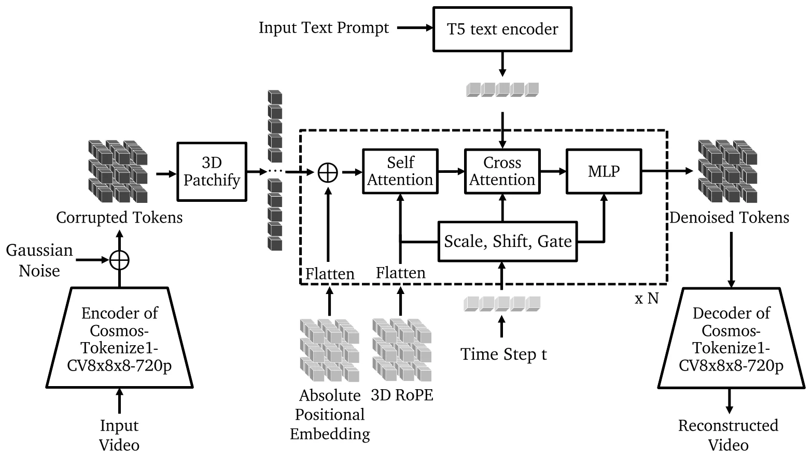
| 配置 | 7B-Text2World | 14B-Text2World | 7B-Video2World | 14B-Video2World |
|---|---|---|---|---|
| 层数 | 28 | 36 | 28 | 36 |
| 模型宽度 | 4,096 | 5,120 | 4,096 | 5,120 |
| FFN 隐层 | 16,384 | 20,480 | 16,384 | 20,480 |
| AdaLN-LoRA 维度 | 256 | 256 | 256 | 256 |
| 注意力头 / KV 头 | 32 / 32 | 40 / 40 | 32 / 32 | 40 / 40 |
| MLP 激活 | GELU | |||
| 位置编码 | 混合位置编码 | |||
| 条件 | 文本；FPS | 文本；FPS | 文本；FPS；帧 | 文本；FPS；帧 |
| 基础学习率 | 2⁻¹⁵ | 2⁻¹⁶ | 2⁻¹⁵ | 2⁻¹⁶ |
| 权重衰减 | 0.1 | 0.2 | 0.1 | 0.2 |
| 预热 | 线性，2,500 步 | |||
| AdamW | β₁, β₂ = 0.9, 0.99；ε = 10⁻¹⁰ | |||
按表 11 和代码（diffusion/config/base/net.py：model_channels=4096, num_blocks=28, num_heads=32, adaln_lora_dim=256，交叉注意力的文本维 crossattn_emb_channels=1024）逐项算，不计偏置和归一化：每块自注意力 \(4d^2\)，交叉注意力 \(2d^2+2\cdot1024\,d\)，FFN \(2\cdot d\cdot4d\)，合计 6.81B。三处调制（自注意力、交叉注意力、MLP）每处要输出 shift、scale、gate 三组：稠密时每块 \(3\times d\times3d=9d^2\)，28 块共 4.23B；LoRA 秩 256 时每处 \(256d+256\cdot3d\)，共 0.35B。所以稠密 11.04B，LoRA 7.16B，少 35.1%，和原文“11B → 7B、36%”一致（36% 是按 11 和 7 两个整数算的）。14B 同样算：LoRA 14.16B，稠密 22.08B。表 11 的 FFN 隐层正好是 4 倍宽度，头维 4096/32 = 5120/40 = 128。
| 阶段 | 分辨率 | 帧数 | 上下文长度 | FSDP | CP |
|---|---|---|---|---|---|
| 低分辨率预训练 | 512p（640 × 512） | 57 | 10,240 | 64 | 2 |
| 高分辨率预训练 | 720p（1280 × 704） | 121 | 56,320 | 64 | 8 |
| 高质量微调 | 720p（1280 × 704） | 121 | 56,320 | 64 | 8 |
原表脚注给了算法，我复算：640/8/2 × 512/8/2 × [(57 − 1)/8 + 1] = 40 × 32 × 8 = 10,240；1280/8/2 × 704/8/2 × [(121 − 1)/8 + 1] = 80 × 44 × 16 = 56,320。都对。121 帧对应 16 个隐帧，57 帧对应 8 个。
diffusion/training/models/model.py 第 147–150 行：adjust_video_noise=True 时 video_noise_multiplier = sqrt(state_shape[1])，state_shape[1] 是隐变量的时间长度。121 帧对应 16 个隐帧，倍数是 4，而不是 \(\sqrt{121}=11\)。Video2World 的实验配置都打开了这个开关。论文写“帧数”，按代码应理解为隐帧数。
显存四项。参数每个 10 字节（FP32 和 BF16 各一份，加 FP32 的 EMA）；梯度 2 字节（BF16）；优化器状态 8 字节（AdamW 两个矩，FP32）；激活约 \(2\times\text{层数}\times15\times\text{seq\_len}\times\text{batch}\times d\) 字节（BF16，表 13 列了各项，归一化等用选择性重算）。14B 模型参数、梯度、优化器约 280 GB，720p 预训练的激活约 310 GB，超过 H100 的 80 GB，所以用 FSDP 和上下文并行（CP）。
FSDP：参数、梯度、优化器状态都分片，用时才聚合。7B 分片因子 32，14B 为 64。CP：把 Q 和 K、V 沿序列切成 CP_SIZE 份，每张卡持一份 Q，轮流接收 K、V 块累加注意力；用 TransformerEngine 的 P2P 版，计算和通信重叠。CP 组放在 NVLink 相连的卡内，和 FSDP 组交叠。图像批上下文短，关掉 CP；交叉注意力的 K、V 短，不用 CP。14B 用 FSDP 64 后约 280 / 64 ≈ 4 GB / 卡，CP 8 后激活约 310 / 8 ≈ 40 GB / 卡，实际还要加 tokenizer 和未分片参数。
和其他模型比。HunyuanVideo 和 MovieGen 用了张量并行（TP）和序列并行（SP），Cosmos 不用 TP/SP 也达到相近的 MFU。LLM 常用的 \(6\times\text{seq\_len}\times P\) 估算 FLOPs 在这里不准，因为长上下文下注意力的平方项占比大，所以表 13 单独列出每项操作的前向 FLOPs。
14B × (10 + 2 + 8) 字节 = 280 GB，对。激活按公式：2 × 36 层 × 15 × 56,320 × 1 × 5,120 = 3.11 × 10¹¹ 字节 ≈ 311 GB，和“310 GB”一致，说明原文按 batch = 1 算。分片后 280 / 64 = 4.4 GB，310 / 8 = 38.8 GB。
| 层 | 操作 | FLOPs | 激活（张量形状） |
|---|---|---|---|
| 自注意力 | Q, K, V 投影 | 2 × 3 × seq_len × d² | seq_len × batch × d（存共享输入） |
| QK 归一化 | — | 2 × seq_len × batch × d（存 Q、K） | |
| A = Q@Kᵀ | 2 × seq_len² × d | —（归一化后的 Q、K 重算） | |
| A′ = Softmax(A) | — | —（注意力分数重算） | |
| A′@V | 2 × seq_len² × d | seq_len × batch × d（存 V） | |
| 输出投影 | 2 × seq_len × d² | seq_len × batch × d | |
| 交叉注意力 | Q, K, V 投影 | 2 × seq_len × d² | seq_len × batch × d |
| QK 归一化 | — | seq_len × batch × d（只计 Q） | |
| A = Q@Kᵀ | — | — | |
| A′ = Softmax(A) | — | — | |
| A′@V | — | —（V 序列很短） | |
| 输出投影 | 2 × seq_len × d² | seq_len × batch × d | |
| 前馈 | 上投影 | 4 × seq_len × d² | seq_len × batch × d |
| GELU | — | 4 × seq_len × batch × d | |
| 下投影 | 4 × seq_len × d² | —（输入由 GELU 重算） | |
| AdaLN | LayerNorm | — | seq_len × batch × d |
| Scale | — | —（由 LayerNorm 重算） | |
| Shift | — | — | |
| Gate | — | seq_len × batch × d |
原表的“前馈上投影 4 × seq_len × d²”按 FFN 宽 4d 算，应是 2 × seq_len × d × 4d = 8 × seq_len × d²；下投影同理。表里写 4，可能是把乘加的系数 2 漏掉了，或按不同约定写的，未核实。
原文图 12 是 7B 和 14B Text2World 对同一提示（双手熨衬衫）的第 0、29、59、89、120 帧，作者说 14B 的细节和动作更复杂。看原图 ↗
训练用的是详细的 VLM 描述，用户提示往往很短，所以要把提示扩写得更详细、结构一致。三个要求：忠于原意（主体、动作、属性）、贴近训练提示的分布（长度、句式、风格）、补充视觉细节。
只有定性结果。原文图 13 上半是 7B / 14B Video2World 以 9 帧为条件生成 5 秒（机械臂端红酒杯）；下半是长视频：先从一张图生成，之后 5 次都以前一段的最后 9 帧为条件续写，共到第 680 帧（工厂内景）。作者说 14B 场景更丰富、运动更稳定。看原图 ↗
Text2World 实验配置（diffusion/training/config/text2world/experiment.py）里 14B 一项是 lr=2**(-16)、weight_decay=0.2、betas=[0.9, 0.99]、eps=1e-10、预热 2,500 步，和表 11 一致。7B 的后训练示例用 lr=2**(-14.3)（约 5 × 10⁻⁵），比表 11 的 2⁻¹⁵ ≈ 3.05 × 10⁻⁵ 大；这是后训练示例，不是预训练值。2⁻¹⁶ ≈ 1.53 × 10⁻⁵。
自己画的 · 11 幕 3D 框架动画
整个平台拆成 11 幕：总览、数据管线、Tokenizer 的因果分组（第 3 幕可单步）、压缩率和 token 数（当场算）、DiT 块和 AdaLN-LoRA（当场算参数量）、EDM 训练和 Video2World 条件、自回归模型和 Medusa、扩散解码器、三类后训练、护栏、评测结果。可以暂停、拖进度、旋转画面、切换开关。
结论：把视频变成离散 token 序列，像语言模型一样做下一个 token 预测。结构刻意贴近 LLM（Llama3 式），只加了 3D 位置编码、文本交叉注意力和 QK 归一化，以便直接用 LLM 的并行和推理加速（KV 缓存、Medusa 投机解码）。代价是 DV8×16×16 压缩很狠，输出偏糊，要靠扩散解码器补细节。
视频经离散 tokenizer 变成 \(\mathcal V=\{v_1,\dots,v_n\}\)，训练 Transformer 解码器最小化负对数似然：
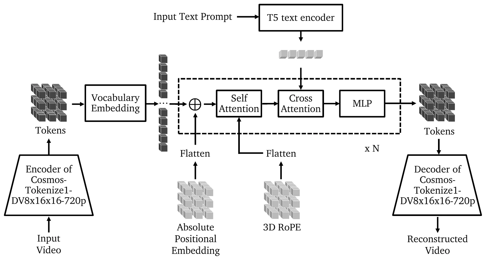
论文写的是“logit 平方和”\(\lambda\sum_i z_i^2\)，\(\lambda=3\times10^{-4}\)。代码（autoregressive/training/model.py 第 246–247 行）是 log_z = logsumexp(logits)，z_loss = z_loss_coeff · mean(log_z²)，即 PaLM 式的“对数配分函数平方”，不是每个 logit 的平方；默认 z_loss_coeff = 1e-4（configs/base/model.py 第 274 行）。两者都让 logit 不要飘太大，但量级和梯度完全不同。论文值是预训练用的，代码默认值是后训练用的，可能本来就不一样；论文的写法我认为不准确。
显存四项：参数每个 6 字节（BF16 加 FP32），梯度 2 字节，优化器 8 字节，激活约 \(2\times\text{层数}\times17\times\text{seq\_len}\times\text{batch}\times d\) 字节。12B 模型前三项约 192 GB（12B × 16 字节），所以用张量并行（TP，把线性层权重按输入或输出维切开，每卡存 1/TP_SIZE）和序列并行（SP，把 LayerNorm、Dropout 这类逐 token 的操作沿序列切开，激活也只存 1/TP_SIZE）。作者说除了没用 MQA、GQA，模型刻意贴近 LLM；CP 和流水线并行留待以后。
| 配置 | 4B | 5B-Video2World | 12B | 13B-Video2World |
|---|---|---|---|---|
| 层数 | 16 | 16 | 40 | 40 |
| 模型宽度 | 4,096 | 4,096 | 5,120 | 5,120 |
| 交叉注意力 | ✗ | ✓ | ✗ | ✓ |
| 基础学习率 | 1 × 10⁻³ | 3 × 10⁻⁴ | 1 × 10⁻³ | 5 × 10⁻⁴ |
| 权重衰减 | 0.01 | |||
| 预热 | 线性，5,000 步 | |||
| 激活 | SwiGLU | |||
| FFN 隐层 | 14,336 | |||
| 注意力头 / KV 头 | 32 / 8 | |||
| token 数 | 12,800 | |||
| 词表 | 64,000 | |||
| 位置编码 | 3D RoPE（θ = 500,000）+ 3D APE | |||
4B 和 12B 只用阶段 1 和 1.1 训练，是纯视频 token 预测器；5B、13B 分别从 4B、12B 出发再加阶段 2。
表 14 的“注意力头 32、KV 头 8”就是分组查询注意力（GQA，4 个查询头共用一组 K、V）。代码 autoregressive/configs/base/model_config.py 第 37 行 BASE_CONFIG = {"n_kv_heads": 8, ...} 也是 8。但 §5.2.2 写“我们的模型没有用 MQA 或 GQA 这类省显存的注意力”。按表和代码，这句话不对。
参数量可以复算（代码：4B 是 16 层、宽 4096、32 头；12B 是 40 层、宽 5120、32 头但 head_dim=128，所以注意力内部宽 4096，不是 5120）：每层注意力 \(d\cdot4096\times2+2\times d\cdot1024\)，SwiGLU \(3\times d\times14336\)，输入输出嵌入各 \(64000\times d\)。4B 得 4.01B，12B 得 11.56B。加交叉注意力（文本维 1024，代码 context_dim=1024）后约 4.69B 和 13.57B，对应“5B”“13B”的名字（这两项是我的估算，没对过权重文件）。
640 × 1024 经 16 倍空间压缩是 40 × 64 = 2,560 个 token / 隐帧。12,800 / 2,560 = 5 个隐帧，按 \(1+(F-1)/8\) 对应 33 帧。代码的示例配置也是 num_video_frames=33、pixel_chunk_duration=33（configs/experiment/video2video/basic.py），并断言帧数必须是 8k + 1。阶段 1 的 17 帧是 3 个隐帧、7,680 个 token，正是代码里 YaRN 的 original_latent_shape=[3, 40, 64]。所以正文的“34 帧”我认为应是 33 帧（或者是把 17 帧翻倍得来的说法）。
借用 LLM 的加速：KV 缓存、张量并行、torch.compile（参考 gpt-fast）。再用 Medusa 投机解码：在最后一层隐状态后加几个额外的解码头并行预测后面多个 token，用拒绝采样验证，不需要单独的草稿模型。每个头是一层带 SiLU 和残差的 FFN，多个头的权重合并成一个大 FFN；不用 Medusa 原文的树注意力。消融发现：只训头效果差，全量微调会掉质量；冻结主干、只解冻最后两层和输出层最好。
| 模型 | 指标 | 0 | 3 | 6 | 9 | 12 |
|---|---|---|---|---|---|---|
| 4B | token 吞吐（token/s） | 444.95 | 663.51 | 829.59 | 894.67 | 890.64 |
| 前向次数 | 7680 | 2860 | 2073 | 1812 | 1682 | |
| 5B | token 吞吐（token/s） | 303.61 | 659.94 | 758.58 | 982.77 | 978.80 |
| 前向次数 | 10240 | 2857 | 2382 | 1799 | 1673 |
作者据此选 9 个头：头越多前向次数越少，但吞吐在 9 个之后不再上升。表 16 是整段生成的耗时（1 帧条件，生成 32 帧）。
| 模型 | GPU | 无 DD（s） | 无 DD + Medusa（s） | 有 DD（s） | 有 DD + Medusa（s） | 显存（GB） |
|---|---|---|---|---|---|---|
| 4B | 1 | 31.04 | 23.52 | 61.49 | 53.08 | 29 |
| 4 | 18.20 | 13.87 | 29.60 | 25.63 | 31 | |
| 8 | 17.62 | 9.91 | 30.30 | 22.83 | 34 | |
| 5B | 1 | 39.68 | 24.97 | 70.39 | 54.72 | 59 |
| 4 | 25.59 | 20.96 | 37.29 | 33.35 | 51 | |
| 8 | 25.70 | 11.67 | 38.41 | 24.35 | 49 | |
| 12B | 1 | 84.78 | — | 116.66 | — | 45 |
| 4 | 47.49 | — | 60.27 | — | 36 | |
| 8 | 45.69 | — | 58.81 | — | 37 | |
| 13B | 1 | 109.18 | — | 140.24 | — | 77 |
| 4 | 67.80 | — | 80.76 | — | 55 | |
| 8 | 67.22 | — | 80.93 | — | 55 |
DD = 扩散解码器。生成 32 帧，1 帧条件，BF16。
低分辨率实时化。先在目标领域的 320p 视频上微调 DV8×16×16，再把 640 × 1024 预训练的 4B 换上这个 tokenizer 在 320 × 512 上微调，最后加 Medusa 头。8 × H100、torch.compile max-autotune、BF16、10 FPS 输入，结果见表 17：不到 1 秒生成 10 帧，即 10 FPS 实时。
| 模型（320 × 512） | token/s | 帧/s |
|---|---|---|
| Cosmos-Predict1-4B（带 Medusa） | 806.61 | 10.08 |
正文的倍数可以复算，但用的是不同的头数：4B 吞吐 894.67 / 444.95 = 2.01 倍（9 个头），前向次数 7680 / 1682 = 4.57 倍（12 个头）；5B 982.77 / 303.61 = 3.24 倍、10240 / 1673 = 6.12 倍。按选定的 9 个头，前向减少是 4.24 倍和 5.69 倍。
对不上的是 0 个头时的前向次数：没有投机解码时一次前向出一个 token，所以它就是生成的 token 数。4B 是 7,680（3 个隐帧 × 2,560），5B 是 10,240（4 个隐帧）。同样“1 帧条件、生成 32 帧”的任务（33 帧 = 5 个隐帧，去掉 1 个条件隐帧，应生成 4 个即 10,240 个 token），4B 这一行少了一个隐帧，原文没解释，未核实。
表 16 里 Medusa 的端到端加速小于吞吐的倍数：4B 单卡 31.04 / 23.52 = 1.32 倍，8 卡 17.62 / 9.91 = 1.78 倍。表 17：320 / 16 × 512 / 16 = 640 个 token / 隐帧，一个隐帧 8 帧，即 80 个 token / 帧，806.61 / 80 = 10.08 帧/秒，对得上。代码里 Medusa 的默认 medusa_num_heads=7，可选 ft_medusa_option 中有“head_out_last_k_layer”，对应论文的做法，但默认是 “fft”（全量微调）。
把 Cosmos-Predict1-7B-Text2World 微调成一个更强的“tokenizer 解码器”：每段训练视频同时过 CV8×8×8 和 DV8×16×16，得到连续和离散两份 token；离散 token 经可学习的词表嵌入变成 16 维向量，在 x、y 上上采样 2 倍，对齐连续 token 的网格，和加了噪声的连续 token 在通道维拼接，作为去噪器输入（第一层相应扩宽通道）。离散条件不加噪声，所以去噪器学会利用它。推理时先由自回归模型输出的离散 token 生成连续 token，再用 CV8×8×8 解码成 RGB。
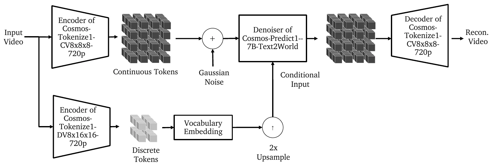
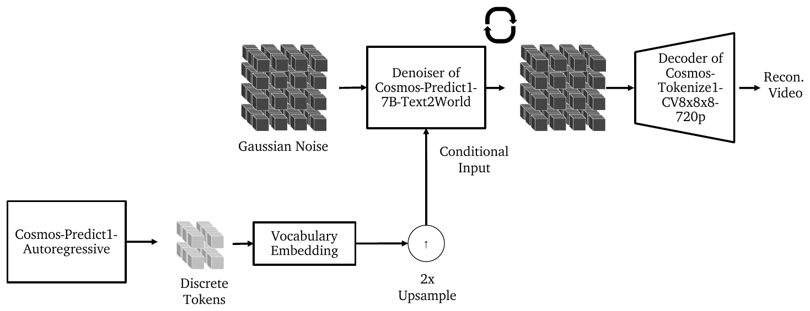
维度是对得上的：DV 的空间格子是 16 倍下采样，CV 是 8 倍，所以上采样 2 倍正好对齐；时间都是 8 倍；嵌入维 16 等于连续隐变量的通道数。
原文图 17：无提示时 12B 比 4B 运动更好、细节更锐；有提示时 13B 比 5B 运动更好（高速公路驾驶）。看原图 ↗ 图 18 比较 13B-Video2World 加不加扩散解码器：自回归直接解出来偏糊，扩散解码器保留内容、变清晰。作者还发现自回归模型用扩写后的提示并没有变好，猜测是大部分训练都是纯视频，没被逼着用文字。
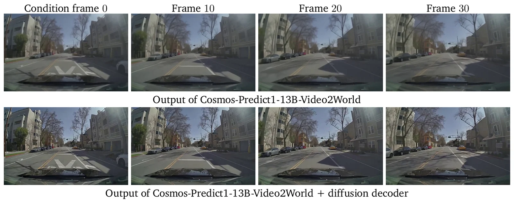
典型失败是物体从画面下方凭空冒出来（图 19）。作者用 100 个物理 AI 输入、单帧和 9 帧两种条件逐个人工检查（表 18）：小模型单帧条件失败率高，9 帧条件下所有模型都低于 2%（原文如此；5B 正好是 2%）。
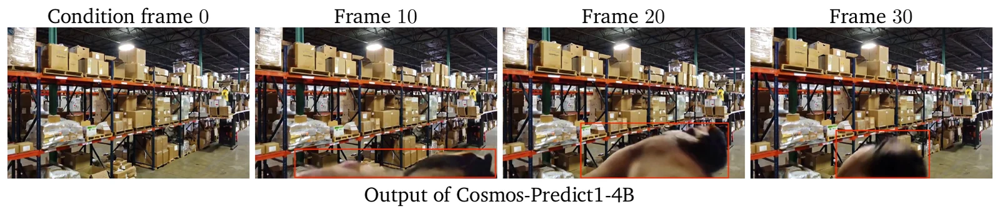
| 模型 | 图像条件 | 视频条件（9 帧） |
|---|---|---|
| Cosmos-Predict1-4B | 15% | 1% |
| Cosmos-Predict1-5B-Video2World | 7% | 2% |
| Cosmos-Predict1-12B | 2% | 1% |
| Cosmos-Predict1-13B-Video2World | 3% | 0% |
结论：只评了两项。3D 一致性上，扩散 7B 远好于 VideoLDM，有的指标甚至好过真实视频；物理对齐上，各模型都差不多地吃力，模型变大没有更好。
只看静态场景，这样能直接用多视图几何工具。从 RealEstate10K 测试集随机取 500 段，用专有 VLM 写成“静态场景”的提示，基线是 VideoLDM。两类指标：
\(\{(\bar{\mathbf x}_i,\bar{\mathbf y}_i)\}\) 是一对帧的 N 组齐次坐标对应点，F 是由它们估计的基础矩阵。对应点用 SuperPoint 加 LightGlue，F 用 OpenCV 的 8 点 RANSAC。用平方根形式让单位接近像素，并按 960 × 540 画布的对角线（约 1,101 像素）归一化。
| 方法 | 几何一致性 | 视图合成一致性 | |||
|---|---|---|---|---|---|
| Sampson 误差 ↓ | 位姿估计成功率 ↑ | PSNR ↑ | SSIM ↑ | LPIPS ↓ | |
| VideoLDM | 0.841 | 4.4% | 26.23 | 0.783 | 0.135 |
| Cosmos-Predict1-7B-Text2World | 0.355 | 62.6% | 33.02 | 0.939 | 0.070 |
| Cosmos-Predict1-7B-Video2World | 0.473 | 68.4% | 30.66 | 0.929 | 0.085 |
| Cosmos-Predict1-4B | 0.433 | 35.6% | 32.56 | 0.933 | 0.090 |
| Cosmos-Predict1-5B-Video2World | 0.392 | 27.0% | 32.18 | 0.931 | 0.090 |
| 真实视频（参考） | 0.431 | 56.4% | 35.38 | 0.962 | 0.054 |
7B-Text2World 的 Sampson 误差 0.355 低于真实视频 0.431，位姿成功率 62.6% 高于真实视频 56.4%。原文只说“达到真实视频的水平”。我的推断：生成视频可能相机运动更小、更平滑，或者纹理更规整，更容易匹配，这类指标衡量的是“几何上自洽”，不等于“像真实视频一样运动”。视图合成的三项仍是真实视频最好。另外自回归 4B 和 5B 的 Sampson 误差不差，但位姿成功率只有 35.6% 和 27.0%，低于真实视频，说明成功率和误差要一起看（误差只在估计成功的样本上算）。
用 PhysX 和 Isaac Sim 搭了 8 个刚体场景：自由落体、斜面滚动、U 形坡、稳定堆叠、不稳定堆叠、多米诺、跷跷板、陀螺。每个场景随机物体（Omniverse 资产）和背景，4 个固定机位，共 800 段 1080p、100 帧的视频；物体从第一帧起都可见。给 WFM 前 1 帧或 9 帧真值（以及描述物体运动状态的提示），比较之后的预测：像素级 PSNR、SSIM，特征级 DreamSim，物体级用 SAMURAI 把第一帧的真值掩码传播到预测视频，算逐帧 IoU。对帧、视频和 4 个随机种子取平均，算 33 帧（自回归模型能生成的最大长度），PSNR / SSIM 不含条件帧。
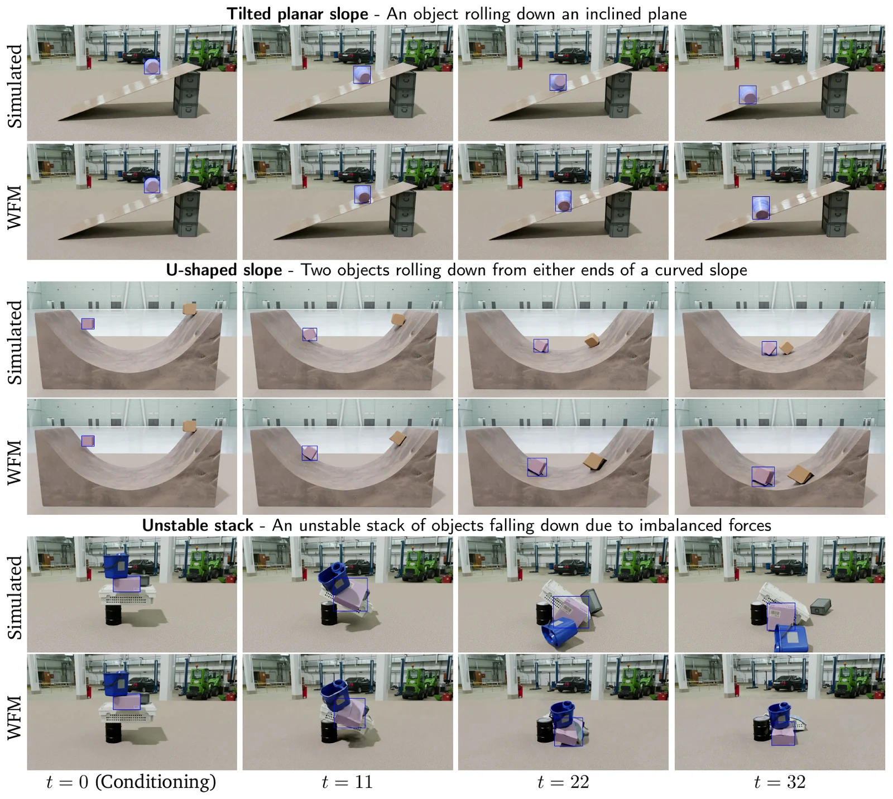
| 模型 | 条件 | PSNR ↑ | SSIM ↑ | DreamSim ↑ | 平均 IoU ↑ |
|---|---|---|---|---|---|
| 7B-Video2World | 提示 + 1 帧 | 17.34 | 0.538 | 0.836 | 0.332 |
| 7B-Video2World | 提示 + 9 帧 | 21.06 | 0.691 | 0.859 | 0.592 |
| 14B-Video2World | 提示 + 1 帧 | 16.81 | 0.521 | 0.836 | 0.338 |
| 14B-Video2World | 提示 + 9 帧 | 20.21 | 0.635 | 0.860 | 0.598 |
| 4B | 1 帧 | 17.91 | 0.486 | 0.827 | 0.394 |
| 4B | 9 帧 | 18.13 | 0.482 | 0.859 | 0.481 |
| 5B-Video2World | 提示 + 1 帧 | 17.67 | 0.478 | 0.818 | 0.376 |
| 5B-Video2World | 提示 + 9 帧 | 18.29 | 0.481 | 0.864 | 0.481 |
| 12B | 1 帧 | 17.94 | 0.486 | 0.829 | 0.395 |
| 12B | 9 帧 | 18.22 | 0.487 | 0.869 | 0.487 |
| 13B-Video2World | 提示 + 1 帧 | 18.00 | 0.486 | 0.830 | 0.397 |
| 13B-Video2World | 提示 + 9 帧 | 18.26 | 0.482 | 0.865 | 0.482 |
观察：条件帧越多，越能推断速度、加速度，预测越好；9 帧时扩散模型的像素指标好于自回归模型；大模型没有在物理上更好。失败从物体恒存性（凭空出现、消失）、形变，到违反重力的运动都有。作者打算加入更复杂的场景、提高仿真的真实感来缩小和真实视频的差距。
原文只说“9 帧时扩散模型像素指标更好”。1 帧条件下反过来：自回归 4B / 12B / 13B 的 PSNR 17.91 / 17.94 / 18.00 都高于扩散 7B / 14B 的 17.34 / 16.81，IoU 0.394 到 0.397 也高于 0.332 和 0.338。另一面是自回归从 1 帧到 9 帧几乎不涨（4B 的 PSNR 只 +0.22，SSIM 还降了），扩散涨得多（7B 的 PSNR +3.72，IoU +0.26）。我的推断：自回归模型受 DV8×16×16 的重建上限限制（表 6 的 TokenBench PSNR 只有 29.33），多给几帧也很难在像素上更准。
结论：三类样例，都从 7B 扩散模型（机器人一节另有 5B 自回归）出发微调。名字里的 “-Sample” 表示只是示范，不是能直接用的产品；开发者要用自己的数据再微调。
| 节 | 模型 | 条件 |
|---|---|---|
| 6.1 | Cosmos-Predict1-7B-Video2World-Sample-CameraCond | 文本 + 图像 + 相机 |
| 6.2 | Cosmos-Predict1-7B-Video2World-Sample-Instruction | 文本 + 视频 |
| 6.2 | Cosmos-Predict1-7B-Video2World-Sample-Instruction | 文本 + 视频 |
| 6.2 | Cosmos-Predict1-7B-Video2World-Sample-ActionCond | 动作 + 视频 |
| 6.2 | Cosmos-Predict1-7B-Video2World-Sample-ActionCond | 动作 + 视频 |
| 6.3 | Cosmos-Predict1-7B-Text2World-Sample-MultiView | 文本 |
| 6.3 | Cosmos-Predict1-7B-Text2World-Sample-MultiView-TrajectoryCond | 文本 + 轨迹 |
| 6.3 | Cosmos-Predict1-7B-Video2World-Sample-MultiView | 文本 + 视频 |
6.2 的 Instruction 和 ActionCond 各出现两次，名字完全相同。按 §6.2.2，其中一行应是 5B 自回归版本（Cosmos-Predict1-5B-Video2World-Sample-Instruction 和 …-ActionCond），表里都写成了 7B。
结论：给 7B-Video2World 加 Plücker 射线作为相机条件，单张图加相机轨迹就能生成 3D 一致的视频。在 RealEstate10K 上，位姿估计成功率 82.0% 对 CamCo 的 43.0%，旋转误差 1.646° 对 8.277°，FID / FVD 也低得多（表 22）。
数据。用静态场景视频集 DL3DV-10K，切成 256 帧一段，用 GLOMAP 做 SfM 得到每帧位姿，第一帧设为单位变换，其余是相对位姿；用专有 VLM 写静态场景描述。
微调。把采样的隐变量和同尺寸的 Plücker 嵌入拼接。每个隐变量像素（把隐变量当成下采样的图像）的射线：
\(\mathbf c\) 是相机中心，\(\mathbf d\) 是单位射线方向，位姿都相对第一帧。tokenizer 时间压缩 8 倍，所以每 8 帧取第 4 帧的 Plücker 嵌入，拼到对应隐帧上。训练帧缩放到 704 × 1252，反射填充到 704 × 1280，取 57 帧，其他和基础训练相同。
评测。单张参考图生成后续视频，对比 CamCo（也在 DL3DV-10K 上微调）。Cosmos 生成 57 帧，CamCo 只能 14 帧，所以同样 57 帧的轨迹给 CamCo 时间上降采样 4 倍；CamCo 分辨率只有 256 × 256，评测时都做最大中心裁切。测试数据是 §5.3.1 的同 500 段 RealEstate10K，首帧作参考，数据集自带轨迹作相机输入，并把轨迹两端距离归一化为 1。视频质量用 FID、FVD；3D 一致性用 SfM 重新估计位姿，和输入轨迹比较（先做 Procrustes 对齐消除相似变换的歧义）：
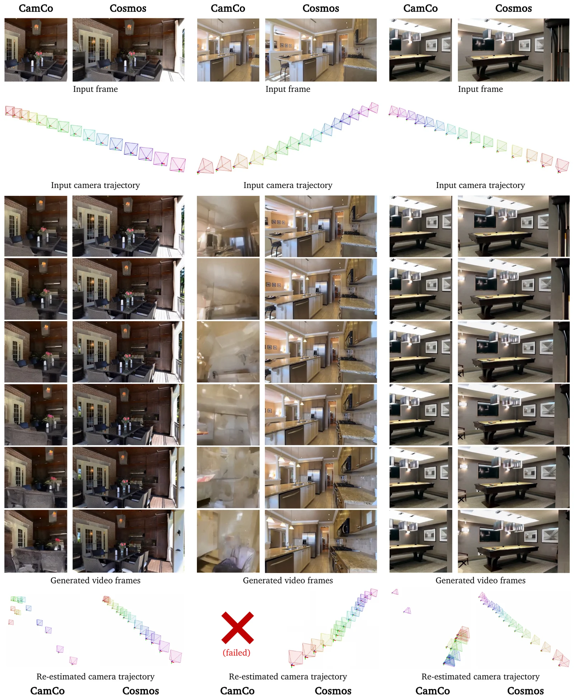
| 方法 | 相机轨迹对齐 | 视频生成质量 | |||
|---|---|---|---|---|---|
| 位姿估计成功率 ↑ | 旋转误差（°）↓ | 平移误差 ↓ | FID ↓ | FVD ↓ | |
| CamCo | 43.0% | 8.277 | 0.185 | 57.49 | 433.24 |
| Cosmos-Predict1-7B-Video2World-Sample-CameraCond | 82.0% | 1.646 | 0.038 | 14.30 | 120.49 |
两个模型都在 DL3DV-10K 上训练、在 RealEstate10K 上测，分布差异明显，Cosmos 能跨过去，也能泛化到没见过的轨迹。原文图 22 是摇杆式控制（前进、后退、左转、右转）的第 14、28、42、57 帧；图 23 是同一输入和相机、不同随机种子生成的不同世界。看图 22 ↗ 看图 23 ↗
57 帧对应 1 + 56 / 8 = 8 个隐帧，每个隐帧（除首帧外）覆盖 8 帧，取其中第 4 帧的射线。CamCo 降采样 4 倍：第 0、4、…、52 帧共 14 帧，正好是它的上限。平移误差在轨迹长度归一化为 1 之后算，所以 0.038 可以读作“全程长度的 3.8%”。论文没说相机条件的模型权重是否在 cosmos-predict1 里公开，我在 README 的模型列表里没找到 CameraCond。
结论：两个任务。指令条件的视频预测（当前帧 + 文字指令 → 未来视频），在 1X 人形的数据上，人工评测 7B 的综合偏好 78.3% 对 VideoLDM 的 13.0%。动作条件的下一帧预测（当前帧 + 7 维动作 → 下一帧，自回归滚动），在 Bridge 上 7B 的 FVD 190 对 IRASim 的 593。
数据。指令任务用内部的 Cosmos-1X 数据集：1X 公司 EVE 人形机器人约 200 小时的第一人称视频（导航、叠衣服、擦桌子、拿东西等），选出约 12,000 段 1 到 9 秒的片段，每段一句指令，再由专有 VLM 扩写；30 FPS，512 × 512。动作任务用公开的 Bridge，按 IRASim 的设置：约 20,000 段第三人称厨房机械臂视频，320 × 256，5 FPS；每帧的动作是夹爪坐标系下的 7 维向量 \((\Delta x,\Delta y,\Delta z,\Delta\theta_r,\Delta\theta_p,\Delta\theta_y,\Delta{\rm Gripper})\)，同 OpenVLA。
微调。7B 扩散和 5B 自回归都做。指令：把指令的 T5 嵌入经交叉注意力加进来。动作是预训练没见过的模态，要加模块：5B 用一个动作嵌入 MLP，把结果经交叉注意力注入；7B 也用动作嵌入 MLP，但加到 DiT 的时间步嵌入上。
diffusion/training/networks/general_dit_action.py：两个 MLP，输入都是 7 维（in_features=7），隐层 4d，一个输出 d 维、加到时间步嵌入上（第 486 行），另一个输出 3d 维、加到 AdaLN-LoRA 的低秩输出上（第 487 行）。论文只提了前者。训练只用当前帧和下一帧两帧（video2world_action/experiment.py 的 num_frames=2；推理配置的隐变量形状 [16, 2, 32, 40]，每帧单独过 tokenizer，pixel_chunk_duration=1），只取第一个时刻的动作（第 483 行的注释）。所以“自回归滚动”是每次生成一帧再喂回去。
评测。指令任务的基线是在 Cosmos-1X 上微调的 VideoLDM（VideoLDM-Instruction）。四个维度：指令遵循、物体恒存、真实性（没有凭空的物体）、综合（能否据此规划）。十位评估者在 23 个测试片段上两两比较匿名视频（图 24）。
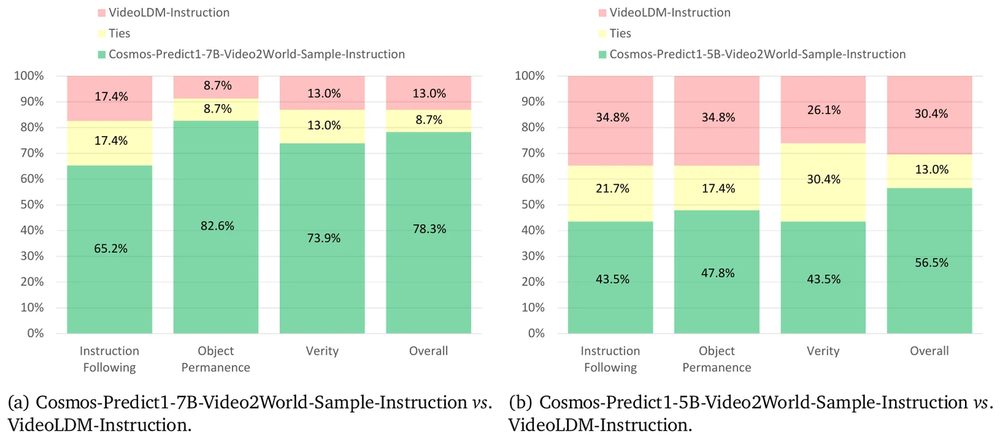
图 24 里出现的 24 个百分比全是 23 的整数分之一：17.4 = 4/23，8.7 = 2/23，13.0 = 3/23，65.2 = 15/23，82.6 = 19/23，73.9 = 17/23，78.3 = 18/23，43.5 = 10/23，21.7 = 5/23，34.8 = 8/23，47.8 = 11/23，30.4 = 7/23，26.1 = 6/23，56.5 = 13/23。所以每个片段只计一票，十位评估者的意见是怎样合成一票的（多数？），原文没说。样本量只有 23，5B 的指令遵循 43.5% 对 34.8% 只差 2 票。
动作任务的基线是微调的 IRASim（IRASim-Action），在官方测试集随机 100 段上逐帧自回归生成，和真值比较：
| 方法 | PSNR ↑ | SSIM ↑ | Latent L2 ↓ | FVD ↓ |
|---|---|---|---|---|
| IRASim-Action | 19.13 | 0.64 | 0.38 | 593 |
| Cosmos-Predict1-5B-Video2World-Sample-ActionCond | 19.95 | 0.80 | 0.36 | 434 |
| Cosmos-Predict1-7B-Video2World-Sample-ActionCond | 21.14 | 0.82 | 0.32 | 190 |
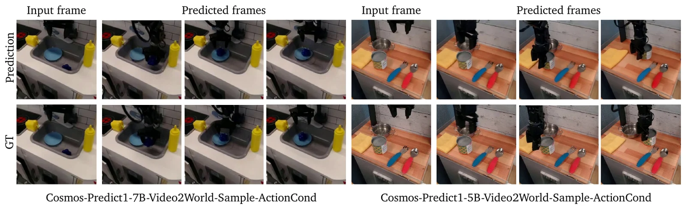
结论：把 7B-Text2World 微调成同时生成 6 路相机视频的模型，另有轨迹条件版和视频续写版。和同样微调的 VideoLDM 比，FID 32.16 对 60.84，FVD 210.23 对 884.46；跨视角 Sampson 误差 2.11 对 6.48，接近真实视频的 1.71；轨迹条件版的跟随误差 20.20 cm，比真值估计多约 7 cm。
数据。内部的 Real Driving Scene（RDS）：约 360 万段 20 秒环视视频（约 2 万小时），NVIDIA 内部驾驶平台采集，6 路相机（前、左、右、后、左后、右后），带自车运动；以前视相机时间戳同步其他视角。按属性分布挑选：车流密度、天气、光照、自车速度、自车行为（曲率和加速度）、道路类型（按 OpenStreetMap 分乡村、住宅、城市），再补挖一轮罕见结构（收费站、桥、隧道、减速带）。每个视角单独写描述，以固定句式开头：“视频由装在车上的相机拍摄，相机朝向前方 / 左 / 右 / 后 / 左后 / 右后。”
微调。三个模型都输出 6 路、57 帧、848 × 480。
评测。基线是同样配方微调的 VideoLDM-MultiView。生成质量用 1,000 个样本、每个视角取 16 帧算 FID / FVD，再对视角平均。一致性类指标把真值轨迹分成直行、左转、右转、其他四类，每类 200 个，共 800 个。
| 方法 | FID ↓ | FVD ↓ | TSE ↓ | CSE ↓ |
|---|---|---|---|---|
| VideoLDM-MultiView | 60.84 | 884.46 | 1.24 | 6.48 |
| Cosmos-Predict1-7B-Text2World-Sample-MultiView | 32.16 | 210.23 | 0.68 | 2.11 |
| …-MultiView-TrajectoryCond | - | - | 0.59 | 2.02 |
| 真实视频（参考） | - | - | 0.69 | 1.71 |
| 方法 | TAE-ATE ↓ | TAE-RPE-R ↓ | TAE-RPE-t ↓ | TFE ↓ |
|---|---|---|---|---|
| VideoLDM-MultiView | 0.88 | 22.94 | 0.77 | - |
| Cosmos-Predict1-7B-Text2World-Sample-MultiView | 0.77 | 4.25 | 0.29 | - |
| …-MultiView-TrajectoryCond | 0.54 | 4.31 | 0.18 | 20.20 |
| 真实视频（参考） | 0.49 | 4.60 | 0.14 | 13.49 |
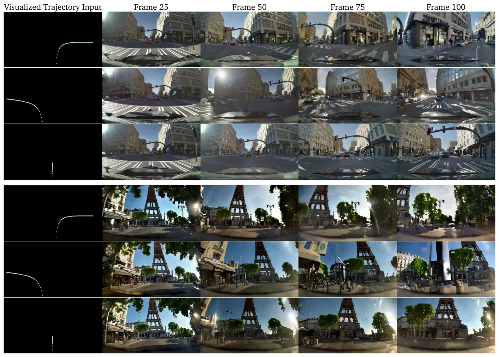
360 万 × 20 秒 = 7,200 万秒 = 20,000 小时，对。TFE 20.20 − 13.49 = 6.71 cm，即原文的“不到 7 cm”。时长有一处没交代清：文字说 57 帧扩到 201 帧是“8 秒”，即约 25 FPS，57 帧约 2.3 秒；但轨迹是 64 个点 × 0.1 秒 = 6.4 秒，比 57 帧长得多，轨迹和帧怎么对齐原文没说。图 29 显示到第 100 帧，超过 57 帧，应是续写后的结果。表 25 的 RPE-R 一列 Cosmos（4.25、4.31）比真实视频（4.60）还低，和读者注 22 的情况类似。
diffusion/config/base/net.py 的 FADITV2_Multiview_Config：n_views=6、view_condition_dim=6（视角嵌入），其余和 7B 相同（28 层、宽 4096）。有一处不同：多视角版的每块额外绝对位置嵌入是 extra_per_block_abs_pos_emb_type="sincos"，而 7B Text2World 的推理配置是 "learnable"。§5.1.2 说扩散模型用可学习的嵌入，多视角版在代码里换成了正弦。
结论：两段。pre-Guard 在文字上：先查关键词表，再用 Aegis（一个按 13 类安全风险微调的 Llama-Guard）。post-Guard 在画面上：逐帧安全分类器，任一帧不安全就拦整段；再用 RetinaFace 把大于 20 × 20 像素的人脸打马赛克。
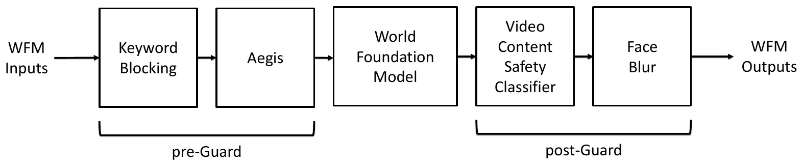
cosmos_predict1/auxiliary/guardrail/common/presets.py 第 33 行：文本护栏是 [Blocklist, LlamaGuard3]，没有 Aegis；aegis/ 目录还在，但默认不用。README 也写着安全过滤由 Llama Guard 3 提供。视频护栏是 VideoContentSafetyFilter 加后处理 RetinaFaceFilter，和论文一致。细节：安全分类器输入 1152 维的 SigLIP 嵌入、输出 7 类（video_content_safety_filter.py 第 56 行）；人脸检测置信度阈值 0.7，最小尺寸 (20, 20)；关键词表除了词形还原，还用 better-profanity 做模糊匹配，再把白名单词放回去（blocklist.py）。
结论：作者把 Cosmos 放在“生成式视频世界模型”这条线上，并说扩散和自回归各有长处，所以两种都做。
作者认为这是走向通用物理世界模拟器的一大步：数据管线、两类 tokenizer、两类 WFM 架构和多种下游微调，并在 3D 导航、机器人操作、自动驾驶上展示了 3D 一致性和动作可控性。
局限。WFM 还在早期，包括 Cosmos 在内都还不是可靠的物理模拟器：缺物体恒存性、接触丰富的动态不准、指令遵循不一致；画面逼真不等于守物理（重力、光照、流体）。评测本身也难：人工评物理真实性受主观影响，而且不一定和下游物理 AI 指标正相关。可能的方向是用多模态 LLM 做自动评估器，或借助现有物理仿真器做可复现、可交互的评测。
自回归还是扩散。3D 一致性（§5.3.1）和机器人视频生成（§6.2）的结果都说明扩散目前画质更好，也更容易通过微调接入各种控制信号（相机、末端位置、车辆轨迹）和多视角输出。但自回归有两点潜力：继承 LLM 预训练权重里的世界知识；用因果注意力的推理优化实现更快生成，适合交互控制和实时场景。两者界限也不死：双向扩散 Transformer 可以蒸馏成因果的学生模型以支持 KV 缓存（CausVid），自回归也可以带局部双向注意力加扩散头（Transfusion）。
附录只有名单，没有技术内容。按组列出核心贡献者：数据整理、Tokenizer、扩散预训练、自回归预训练、提示词扩写、扩散解码器、3D 一致性评测、物理对齐评测、相机控制、机器人、自动驾驶、护栏，平台架构是 Ming-Yu Liu；另有一组贡献者。致谢里感谢 1X Technologies 提供人形机器人数据。
| 组 | 人数 |
|---|---|
| 数据整理 | 30 |
| Tokenizer | 6 |
| 扩散 WFM 预训练 | 11 |
| 自回归 WFM 预训练 | 6 |
| 提示词扩写 | 4 |
| 扩散解码器 | 6 |
| 3D 一致性评测 | 2 |
| 物理对齐评测 | 6 |
| 相机控制后训练评测 | 4 |
| 机器人后训练评测 | 12 |
| 自动驾驶后训练评测 | 12 |
| 护栏 | 4 |
| 平台架构 | 1 |
| 其他贡献者（A.2） | 13 |
人数是我数的，同一人可在多组出现。
结论：这篇是 Cosmos-Predict 系列的起点。OpenWAM 用的不是这里的 Predict1，而是后来的 Cosmos-Predict2.5-2B（§4.1.1 里得 91.64）和 Cosmos 3；但这些后继模型的 DiT 骨架，仍是本文 §5.1.2 那一套。
我对照了 OpenWAM 仓库（只读，提交 1dcaeea）的 configs/model/video_backbone/cosmos_predict25_2b.yaml 和 openwam/model/video_backbone/cosmos_predict25/：
block_split.py 第 44–52 行，自注意力、交叉注意力、MLP 三处调制各加上同一个低秩 adaln_lora_B_T_3D），位置编码仍是 3D RoPE 加每块额外的绝对位置嵌入（rope_emb_L_1_1_D、extra_per_block_pos_emb），这些变量名和 cosmos-predict1 的 general_dit.py 基本相同（那里叫 adaln_lora_B_3D，多了时间维）。也就是说本页第 5 幕画的块结构，在 OpenWAM 的 Cosmos 骨干里还在。shift_video: 5.0）。这些变化的来龙去脉见 Cosmos-Predict2.5 页。model_variant 里列了 Predict2.5 的 robot/action-cond 变体，但它是否用到，要看具体实验配置，我没有逐个核对。共 30 条。“代码”指 cosmos-predict1 提交 724daa1。
论文没写、我也没找到的：数据管线各步的过滤比例和代码；扩散主训练的 \(P_{\rm mean}\)、\(P_{\rm std}\)；自回归模型的预训练代码；相机控制和指令条件模型的公开权重；驾驶模型的帧率和轨迹对齐方式。
文中提到的数据集、基准、代码和模型。除标注的以外，链接在 2026 年 11 月 16 日用脚本核对都返回 200。
| 名称 | 是什么 | 主页 | 论文 |
|---|---|---|---|
| Cosmos-Predict1 | 本文 | 代码 · HF 权重 | 2501.03575 |
| Cosmos-Tokenizer | 独立的 tokenizer 仓库，已并入 predict1 | github.com/NVIDIA/Cosmos-Tokenizer | 同上 §4 |
| ShotBench | 镜头切分基准（本文新建） | github.com/NVlabs/ShotBench | 本文 §3.2.1 |
| TokenBench | 视频 tokenizer 基准（本文新建） | github.com/NVlabs/TokenBench | 本文 §4.3 |
| BBC Planet Earth | 镜头切分数据 | aimagelab.ing.unimore.it | – |
| ClipShots | 镜头切分数据 | github.com/Tangshitao/ClipShots | Tang 等 2018 |
| SHOT / AutoShot | 镜头切分数据和方法 | github.com/wentaozhu/AutoShot | Zhu 等，CVPRW 2023 |
| TransNetV2 | 选用的镜头检测网络 | github.com/soCzech/TransNetV2 | Souček、Lokoč 2024 |
| DAVIS | 视频 tokenizer 评测 | davischallenge.org | Perazzi 等，CVPR 2016 |
| MS-COCO 2017 | 图像 tokenizer 评测 | cocodataset.org | Lin 等，ECCV 2014 |
| ImageNet-1K | 图像 tokenizer 评测（本机脚本访问超时，站内其他页同一链接） | image-net.org | Deng 等，CVPR 2009 |
| BDD100K | TokenBench 来源之一（官网脚本访问超时，用 GitHub） | github.com/bdd100k/bdd100k | Yu 等，CVPR 2020 |
| Ego-Exo4D | TokenBench 来源之一 | ego-exo4d-data.org | Grauman 等，CVPR 2024 |
| BridgeData V2 / Bridge | TokenBench 来源；§6.2 动作条件数据 | rail-berkeley.github.io/bridgedata | Walke 等 2023；Ebert 等，RSS 2022 |
| Panda-70M | TokenBench 来源；切分基线 | snap-research.github.io/Panda-70M | Chen 等，CVPR 2024 |
| RealEstate10K | 3D 一致性和相机控制评测 | google.github.io/realestate10k | Zhou 等，SIGGRAPH 2018 |
| DL3DV-10K | 相机控制训练数据 | dl3dv-10k.github.io | Ling 等，CVPR 2024 |
| 1X / EVE | Cosmos-1X 数据的机器人 | 1x.tech | – |
| Isaac Sim | 物理对齐场景的仿真器 | developer.nvidia.com/isaac/sim | – |
| Aegis Defensive 1.0 | pre-Guard 的 LLM 过滤器 | huggingface.co/nvidia | 2404.05993 |
| NVIDIA/Cosmos | Cosmos 3 总入口（不含本文代码） | github.com/NVIDIA/Cosmos | 见 Cosmos 3 页 |